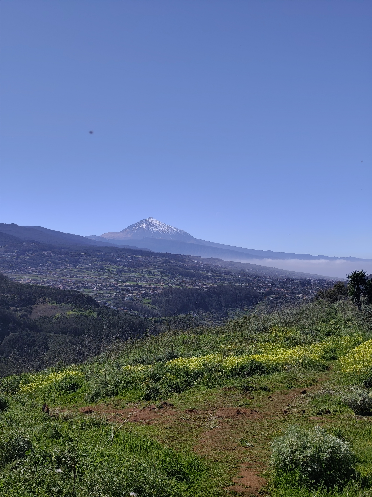

Las 10 Mejores Rutas de Senderismo en Tenerife para 2026

Tenerife es la isla con más variedad de senderismo de Canarias. En menos de 50 km de diámetro conviven el volcán más alto de España, uno de los bosques de laurisilva mejor conservados del planeta y acantilados de seiscientos metros sobre el Atlántico. Puedes desayunar entre nieblas de laurisilva a 600 m y estar por la tarde a 3.500 m sobre un desierto de lava.
Esta selección recoge las diez rutas que de verdad merecen un día de tu viaje, con los datos reales de cada una: distancia, desnivel, tiempo, punto de inicio y —esto es lo que más gente pilla por sorpresa— cuáles necesitan permiso reservado con antelación. Cuatro de las diez lo necesitan, y en temporada alta no se consiguen el día antes.
Las 10 rutas de un vistazo
| Ruta | Km | Dificultad | Permiso | Zona |
|---|---|---|---|---|
| 1. Teide por Montaña Blanca | 9 (ida) | Extrema | Sí ×2 | Parque Nacional |
| 2. Afur – Taganana | 12,2 | Difícil | No | Anaga |
| 3. Barranco de Masca | 6,9 | Extrema | Sí | Teno |
| 4. Paisaje Lunar | 12,9 | Difícil | No | Vilaflor |
| 5. Roques de García | 3,6 | Fácil | No | Parque Nacional |
| 6. Cruz del Carmen – Punta del Hidalgo | 11,4 | Difícil | No | Anaga |
| 7. Roque del Conde | 5,3 | Media | No | Sur |
| 8. Monte del Agua – Risco Verde | 8,3 | Media | No | Teno |
| 9. Barranco del Infierno | 6,9 | Media | Sí | Adeje |
| 10. Ruta 0-4-0 | 50,7 | Extrema | Sí | Travesía |
1. Subida al Teide desde Montaña Blanca (Sendero 7)Permiso
La ruta reina de Canarias y, con diferencia, la que más gente planifica mal. Se sube por coladas de lava y arenas volcánicas desde el aparcamiento de Montaña Blanca hasta La Rambleta, a 3.555 m. Si no bajas en teleférico, cuenta unos 18 km entre ida y vuelta.
Lo que hay que entender de los permisos: son dos distintos y no se solapan. El del sendero 7 autoriza la subida a pie. El del sendero 10 (Telesforo Bravo) es el que te deja hacer los últimos 163 metros desde La Rambleta hasta el cráter. Tener uno no te da el otro. Si solo reservas el del sendero 7, llegas a La Rambleta y de ahí no pasas.
Los dos se reservan en Tenerife ON, con tarifa según residencia: el PNT-10 es gratuito para residentes en Tenerife, 6 € para el resto de Canarias y 15 € para no residentes; el PNT-7 va de 0 a 10 € según el día y la residencia. Hay que llevar el permiso y el DNI, y pueden pedirte material de alta montaña.
La altitud es el otro factor que se subestima. Por encima de 3.000 m el esfuerzo se multiplica y el dolor de cabeza es habitual incluso en gente en buena forma. Súbelo despacio.
Ficha completa, mapa y track GPX
2. Anaga: de Afur a Taganana
Si solo puedes hacer una ruta de laurisilva en Tenerife, que sea esta. Baja por el barranco de Afur hasta la playa del Tamadite, una cala de callaos a la que no llega ninguna carretera, y sube después hasta Taganana por el otro lado del macizo. Anaga es Reserva de la Biosfera y aquí se entiende por qué: en el mismo día pasas de bosque húmedo cerrado a acantilado abierto sobre el Atlántico.
Es exigente, sobre todo en la subida a Taganana, y el terreno suele estar húmedo y resbaladizo todo el año. La niebla de Anaga —el famoso mar de nubes por dentro— aparece sin avisar.
Ficha completa, mapa y track GPX
3. Barranco de MascaPermiso
El descenso más famoso de la isla: un cañón estrecho con paredes de cientos de metros que termina en una playa de callaos al pie del Atlántico. Estuvo cerrado años y reabrió con el acceso regulado.
Las condiciones de entrada no son opcionales. El acceso está regulado desde 2024: reserva previa en la web oficial, con un máximo de 275 personas al día. Es gratis para residentes en Tenerife, 3 € para el resto de Canarias y 28 € para no residentes (los menores, la mitad). La tarifa incluye el registro en el centro de visitantes, el seguro, el personal de seguridad del recorrido y el casco, que es obligatorio llevar puesto. La vuelta en barco se paga aparte.
La dificultad no está en el desnivel sino en el terreno: destrepes, piedra suelta y, en la parte baja, calor de cañón sin sombra ni corriente de aire.
Ficha completa, mapa y track GPX
4. Paisaje Lunar desde Vilaflor (PR-TF 72)
Circular desde el pueblo más alto de España por pinar canario centenario hasta el Paisaje Lunar: un conjunto de chimeneas de piedra pómez erosionada que parecen esculpidas a mano. Es uno de los paisajes más fotografiados de la isla y, aun así, nunca está masificado, porque hay que caminar casi tres horas para llegar.
La catalogamos como difícil y no por el terreno, que es cómodo: es por la distancia combinada con el desnivel y la altitud de salida. Arrancas ya a 1.400 m.
Ficha completa, mapa y track GPX
5. Roques de García (Sendero 3)
La manera de pisar el Parque Nacional sin permisos, sin madrugar y sin experiencia previa. Una circular corta que rodea el Roque Cinchado —el de los billetes de 1.000 pesetas— con el Llano de Ucanca abajo y el Teide enfrente desde todos los ángulos.
Apta para familias, aunque hay un tramo de bajada pedregosa al Llano de Ucanca que conviene hacer con calzado decente, no con zapatillas de calle.
Ficha completa, mapa y track GPX
6. Cruz del Carmen – Punta del Hidalgo
Travesía lineal desde el corazón de Anaga hasta el mar. Sale de la laurisilva del mirador de Cruz del Carmen, pasa por Chinamada, un caserío de casas-cueva todavía habitadas excavadas en la roca, y termina descolgándose por los acantilados hasta Punta del Hidalgo.
Casi todo el desnivel es de bajada, lo que suena bien y no lo es tanto: novecientos metros de descenso continuo castigan rodillas. Los bastones aquí no son un capricho.
Ficha completa, mapa y track GPX
7. Roque del Conde desde Arona
La ruta corta con mejores vistas del sur. Se sube a la mesa del Roque del Conde (1.001 m), una montaña-mesa que domina toda la comarca: abajo la Caldera del Rey y la costa de Adeje, y en días limpios La Gomera, La Palma y El Hierro recortados en el horizonte.
Es corta pero tiene 550 m de desnivel concentrados, casi sin sombra. En verano es ruta de amanecer o nada.
Ficha completa, mapa y track GPX
8. Monte del Agua – Risco Verde (Teno)
La laurisilva del Parque Rural de Teno, menos conocida que la de Anaga y por eso mucho más tranquila. El Monte del Agua es bosque húmedo cerrado, con helechos y goteo constante; media hora después, en los miradores del Risco Verde, tienes delante el paisaje árido del sur, Masca encajado entre barrancos y el Teide al fondo.
Ese contraste en una sola ruta es lo que la hace especial, y es también el mejor resumen de lo que es Tenerife.
Ficha completa, mapa y track GPX
9. Barranco del Infierno (Adeje)Permiso
Reserva Natural Especial con una cascada de 80 metros al final del recorrido —la mayor de Tenerife— y grabados rupestres y cuevas aborígenes por el camino. Es ida y vuelta por el mismo sendero, bien acondicionado.
Necesita reserva previa con varios días de antelación y el aforo está limitado a 300 personas al día. La entrada cuesta 15 €, o 5 € para residentes canarios. El casco que entregan en el punto de encuentro es obligatorio durante todo el recorrido, igual que el calzado de montaña. No se admiten menores de 5 años ni animales.
Y un detalle que deja a mucha gente fuera: las entradas al sendero son solo de mañana, de 8:00 a 10:30 en verano y de 8:30 a 11:30 el resto del año. Si llegas a las 12:00 no entras, tengas reserva o no.
Ficha completa, mapa y track GPX
10. Ruta 0-4-0 TeidePermiso
Del nivel del mar a la cima del Teide y de vuelta al mar. Más de cincuenta kilómetros y 3.700 metros de desnivel positivo en un solo trazado. No es una ruta de senderismo: es un reto de montaña que exige preparación específica, logística de avituallamiento y aclimatación a la altura.
Y, además de todo eso, sigue necesitando los mismos dos permisos del Teide —PNT-7 y PNT-10— reservados en Tenerife ON. Haber subido cincuenta kilómetros desde el mar no te exime de tenerlos.
Ficha completa, mapa y track GPX
Las cuatro rutas que necesitan permiso
Es el error que más viajes estropea en Tenerife: llegar y descubrir que la ruta que venías a hacer está cerrada sin reserva. Resumen de lo que hay que tramitar antes de viajar:
| Ruta | Qué hay que reservar | Precio | Dónde |
|---|---|---|---|
| Teide por Montaña Blanca | Dos permisos distintos y los dos obligatorios: PNT-7 (Montaña Blanca – La Rambleta) y PNT-10 Telesforo Bravo (Rambleta – cráter). Plazas cada lunes a las 7:00 para los 56 días siguientes. | PNT-7: 0-10 € PNT-10: 0 € residentes en Tenerife · 6 € resto de Canarias · 15 € no residentes | Tenerife ON |
| Barranco de Masca | Reserva previa con cupo de 275 personas/día. Incluye seguro, personal de seguridad y casco obligatorio. Barco de vuelta aparte. | 0 € residentes en Tenerife · 3 € resto de Canarias · 28 € no residentes (menores, la mitad) | caminobarrancodemasca.com |
| Barranco del Infierno | Reserva con varios días de antelación, aforo de 300 personas/día. Entrada solo por la mañana: 8:00-10:30 en verano, 8:30-11:30 el resto del año. | 15 € · 5 € residentes canarios | barrancodelinfierno.es |
| Ruta 0-4-0 | Los mismos dos permisos del Teide, PNT-7 y PNT-10. | Igual que la subida al Teide | Tenerife ON |
El teleférico del Teide es un trámite aparte. Te sube a La Rambleta, pero no incluye el permiso del sendero Telesforo Bravo: sin él llegas al mirador y te das la vuelta. Mucha gente compra el billete pensando que con eso sube al cráter.
Cuándo ir a hacer senderismo en Tenerife
La isla camina todo el año, pero no toda la isla a la vez. La regla práctica es sencilla: en invierno, el sur y la costa; en verano, la laurisilva y la media montaña.
| Época | Qué funciona mejor | Qué evitar |
|---|---|---|
| Primavera (mar-may) | Prácticamente todo. Es la mejor época del año: temperaturas suaves, días largos y las cumbres ya accesibles. | Poco. Puede quedar nieve en cotas altas a principios de marzo. |
| Verano (jun-sep) | Anaga, Teno y el pinar de Vilaflor, que dan sombra. El Teide está en su mejor momento. | Masca, Roque del Conde y todo el sur sin sombra a partir de las 11:00. |
| Otoño (sep-nov) | La segunda mejor época. Menos gente que en primavera y el mar aún caliente para rematar el día. | Las primeras lluvias pueden cerrar el Barranco del Infierno. |
| Invierno (dic-feb) | Sur, costa y media montaña. Roque del Conde y Barranco del Infierno están perfectos. | La cumbre del Teide: la nieve cierra accesos y el Parque Nacional restringe la carretera. |
Cómo moverse: coche o guagua
Con coche de alquiler se llega a todos los inicios de ruta de esta lista, pero hay dos detalles que conviene saber. En Anaga las carreteras son estrechas y con muchas curvas: lo que el GPS dice en cuarenta minutos puede ser una hora. Y en el Parque Nacional del Teide, los aparcamientos de Montaña Blanca y Roques de García se llenan temprano en temporada alta.
La red de guaguas de TITSA cubre mejor de lo que parece las rutas lineales: Cruz del Carmen – Punta del Hidalgo se hace perfectamente llegando y volviendo en transporte público desde La Laguna, y es justo el tipo de ruta donde el coche es un estorbo, porque no vuelves al punto de partida.
Qué llevar
- Botas o zapatillas de trail con buen agarre. El terreno volcánico es abrasivo y resbala como grava suelta.
- Agua: 2 litros mínimo en las rutas largas, y 3 en el Teide o en Masca en verano. No hay fuentes en casi ninguna.
- Protección solar alta. En altura el UV es muy intenso aunque la temperatura sea agradable.
- Capa de abrigo aunque abajo haga calor: hay 10-15 °C de diferencia entre la costa y la cumbre, y Anaga es húmeda todo el año.
- Mapa offline descargado. No hay cobertura en el fondo de varios barrancos.
- Bastones para las bajadas largas: Cruz del Carmen – Punta del Hidalgo y Masca los agradecen mucho.
- Frontal si sales de madrugada o la ruta es larga. En Canarias anochece rápido y sin crepúsculo largo.
Hay una guía más detallada en qué llevar en la mochila para hacer senderismo en Canarias.
Preguntas frecuentes
¿Cuál es la mejor ruta de senderismo de Tenerife?
Depende de lo que busques. Si quieres la ruta icónica, la subida al Teide por Montaña Blanca. Si buscas la más bonita sin necesidad de permisos, la circular de Afur a Taganana en Anaga. Y si tienes poco tiempo o vas con niños, Roques de García: 3,6 km, fácil y en pleno Parque Nacional.
¿Qué rutas de Tenerife necesitan permiso?
Cuatro de esta lista: la subida al Teide por Montaña Blanca (dos permisos distintos, PNT-7 y PNT-10 Telesforo Bravo, ambos en Tenerife ON), el Barranco de Masca (reserva de pago con cupo de 275 personas al día y casco obligatorio), el Barranco del Infierno (reserva previa, aforo de 300 personas al día y entrada solo por la mañana) y la Ruta 0-4-0, que necesita los mismos dos permisos del Teide.
¿Hace falta permiso para subir al Teide?
Sí, y son dos cosas distintas. El permiso del sendero 7 autoriza la subida a pie por Montaña Blanca hasta La Rambleta. El del sendero 10 (Telesforo Bravo) es el que permite hacer los últimos 163 metros desde La Rambleta hasta el cráter. Tener el teleférico reservado no sustituye a ninguno de los dos. Los dos se gestionan en Tenerife ON y las plazas se abren cada lunes a las 7:00 hora canaria para los 56 días siguientes.
¿Se puede hacer senderismo en Tenerife en verano?
Sí, pero eligiendo dónde. En julio y agosto las rutas de Anaga, Teno y el pinar de Vilaflor dan sombra y son muy llevaderas, y el Teide está en su mejor momento del año. Lo que hay que evitar es el sur sin sombra —Roque del Conde— y el fondo del Barranco de Masca a partir de media mañana.
¿Cuántos días hacen falta para hacer las mejores rutas de Tenerife?
Con una semana se hacen cómodamente cinco o seis de esta lista, alternando zonas para no pasarte el viaje conduciendo. Un fin de semana da para dos: una de Anaga y una del Parque Nacional, que son las dos caras más distintas de la isla.
¿Es necesario alquilar coche para hacer senderismo en Tenerife?
Para la mayoría de las rutas, sí. La excepción clara es Cruz del Carmen – Punta del Hidalgo, que al ser lineal se hace mejor en guagua desde La Laguna con TITSA. Para Anaga en general el transporte público funciona razonablemente; para Teno, Vilaflor y el Parque Nacional el coche es prácticamente imprescindible.
¿Buscas algo concreto? En el buscador de rutas puedes filtrar las de Tenerife por dificultad, duración y tipo de actividad, y en la página de Tenerife están todas las rutas de la isla organizadas por nivel.